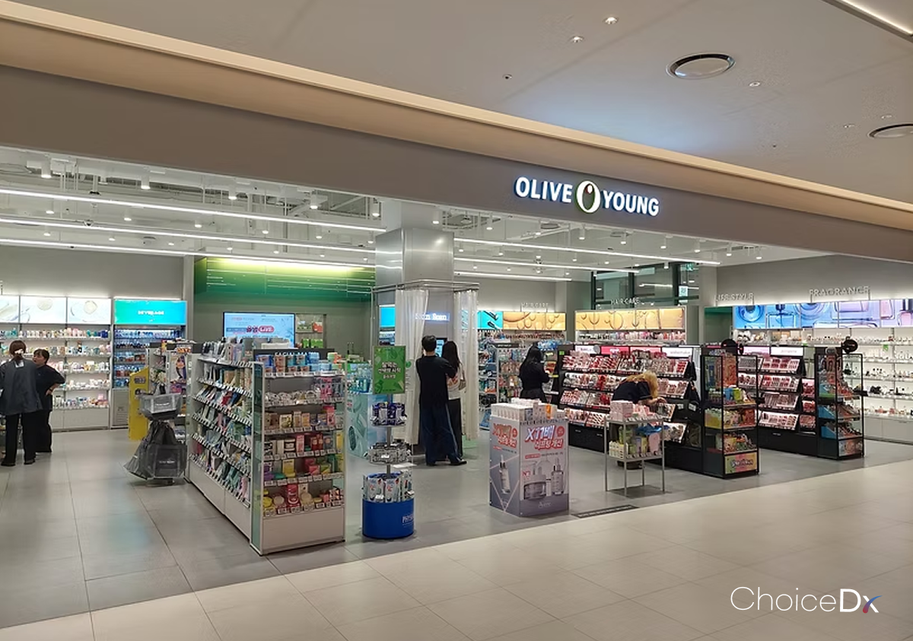
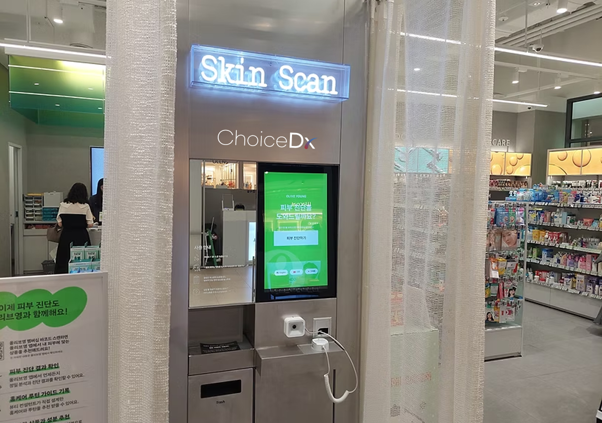
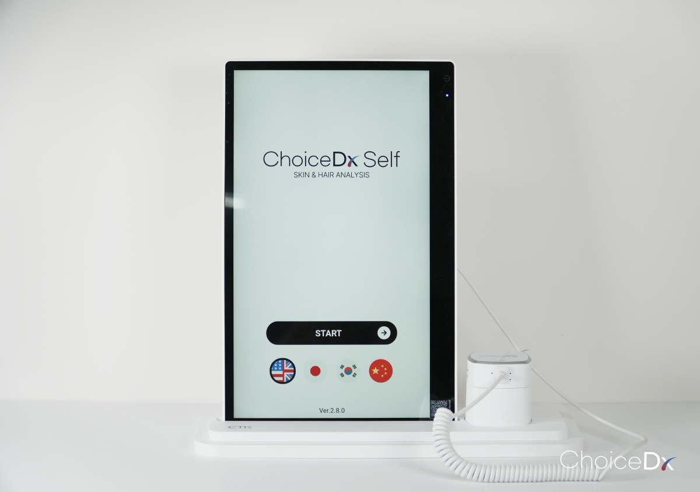
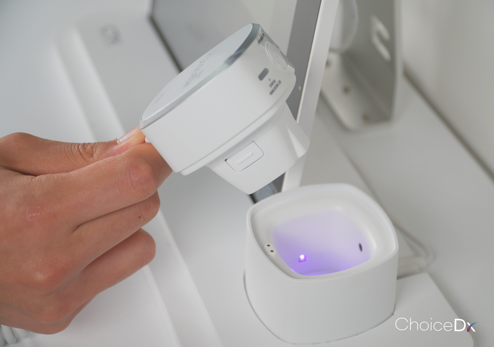
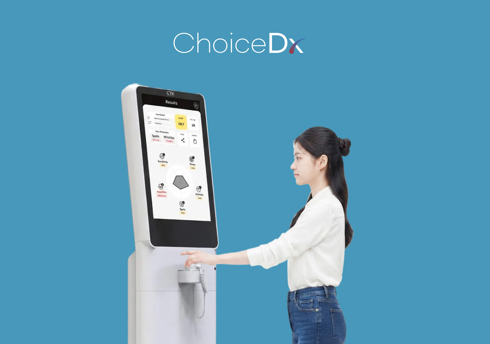
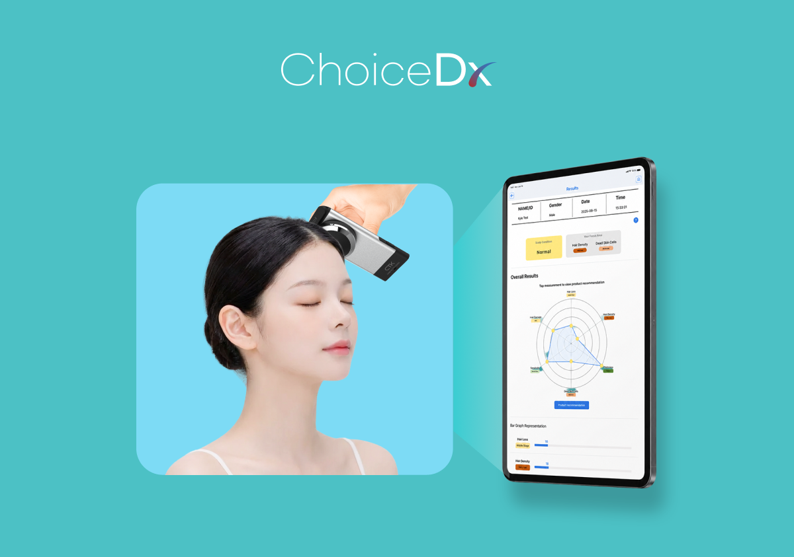
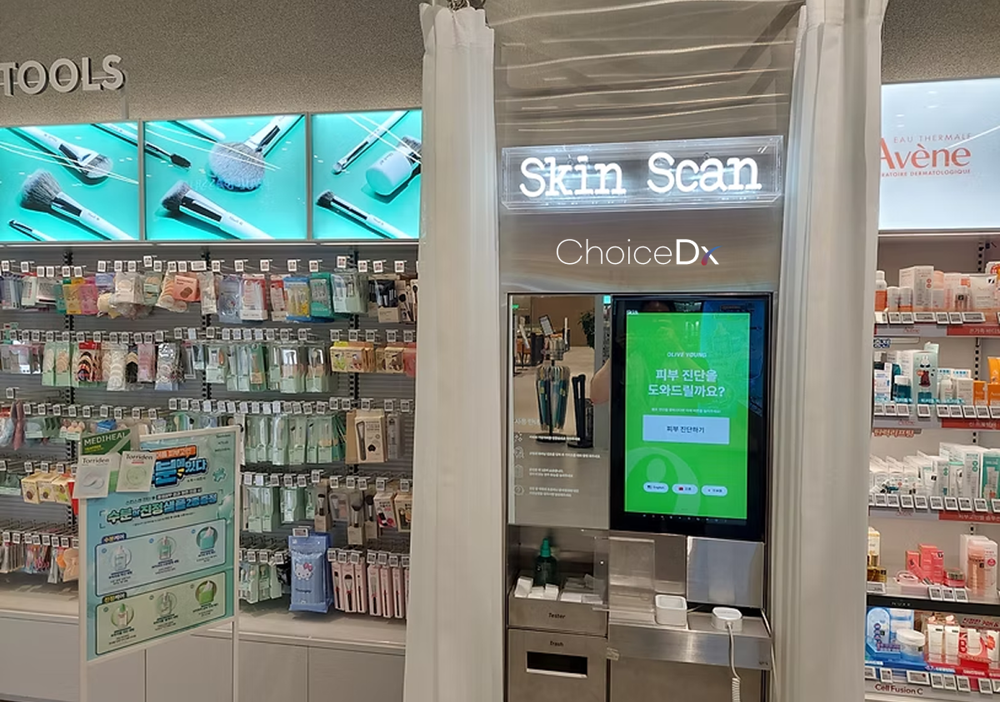
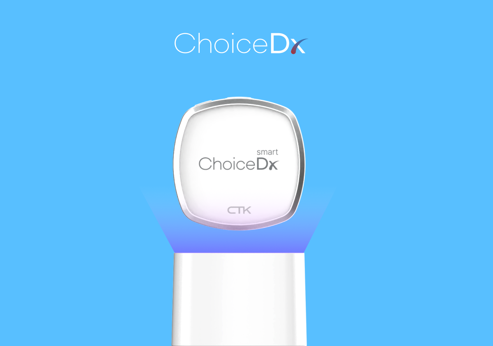
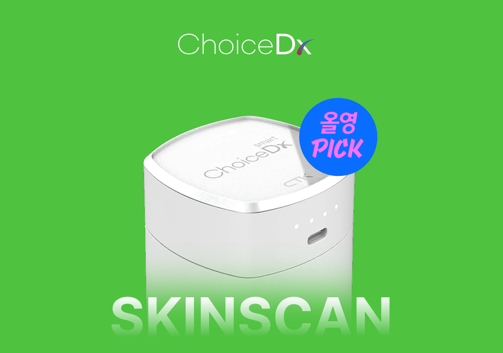

在Olive Young看到的Skin Scan是什么系统？
很多消费者在Olive Young门店看到Skin Scan区域后，会想知道这是什么系统、结果在哪里查看、是否也能查看头皮状态。
ChoiceDx是支持皮肤、头皮、毛发相关拍摄、分析、结果确认和咨询的AI诊断系统品牌。Olive Young Skin Scan可以看作ChoiceDx在零售门店中的代表性应用案例。
本文不只介绍是否免费或门店位置，而是整理使用流程、结果查看方法，以及如何将结果用于产品选择和咨询。


ChoiceDx是什么？
ChoiceDx并不只是单台设备，更接近于由诊断设备、分析软件和结果引导体验共同构成的AI诊断系统品牌。
它的设计目标是把拍摄、分析、结果确认、咨询、产品探索连接成一个流程。因此，它不是单纯的拍摄设备，而是支持零售咨询体验的诊断基础设施。
Olive Young Skin Scan就是这种ChoiceDx体验应用于线下美妆零售门店的案例。
Olive Young Skin Scan如何使用？
具体使用方式会因门店环境而不同，但一般可以理解为确认Skin Scan区域、选择语言或诊断菜单、选择皮肤或头皮测量项目、按照画面指引拍摄、确认AI分析结果，并将结果用于咨询或产品探索。
部分门店可能提供韩语、英语、中文、日语等多语言指引。是否免费、是否需要预约、是否提供样品、运营时间都可能因门店而异，因此以现场 안내为准最准确。
- 确认Skin Scan区域
- 选择语言或诊断菜单
- 选择皮肤或头皮测量项目
- 按照画面指引拍摄
- 确认AI分析结果
- 用于咨询或产品探索


Olive Young Skin Scan可以确认什么？
Olive Young Skin Scan会拍摄皮肤或头皮，并通过图像分析帮助用户理解当前状态。
皮肤诊断可以帮助查看与皮肤表面相关的状态，头皮诊断则有助于观察肉眼不易确认的拍摄部位。
不同门店和运营环境可能提供不同分析项目，请以实际画面中显示的项目为准。
Olive Young Skin Scan结果怎么看？
不要只看一个数字就判断好坏。需要把结果画面中的说明文字和优先护理项目一起阅读。
首先确认相对更需要管理的项目。如果画面提供颜色、等级和说明文字，请同时阅读文字说明。
皮肤类型相对较稳定，而皮肤状态会受到季节、睡眠、环境和生活习惯影响。与单次结果相比，在相似条件下重复测量并观察变化趋势可能更有用。

诊断结果如何用于产品选择？
Skin Scan结果不是购买产品的绝对标准，而是理解当前困扰和确定优先护理方向的参考资料。
建议按照确认结果、了解优先困扰、探索产品品类、比较成分和使用感、咨询、之后重新确认的流程来使用。
在门店咨询时出示结果画面，可以帮助工作人员更快理解顾客困扰，并更清楚地说明选择方向。
| 阶段 | 使用方法 |
|---|---|
| 确认结果 | 查看当前皮肤、头皮状态和优先困扰 |
| 探索品类 | 寻找保湿、舒缓、头皮护理等相关产品 |
| 比较 | 比较成分、使用感、剂型和价格带 |
| 咨询 | 将结果画面作为门店咨询参考 |
| 再次确认 | 一段时间后在相似条件下重新测量 |

除了皮肤，也可以查看头皮吗？
部分Olive Young Skin Scan区域可以同时查看皮肤和头皮状态。
头皮诊断有助于在画面上观察肉眼难以确认的部位。结果也可以作为选择洗发水、头皮护理和护发产品的参考。
是否提供该功能可能因门店而异，请确认现场画面或门店 안내。
Olive Young App Skin Scan和门店设备是一样的吗？
App或线上自测体验与门店Skin Scan设备，在输入方式、使用环境和结果应用上可能不同。
相关功能会因时间和服务政策而变化，因此以实际Olive Young App和门店 안내为准最准确。
| 区分 | App或线上自测 | 门店Skin Scan设备 |
|---|---|---|
| 输入方式 | 问卷、自行拍摄等 | 专用设备或门店环境拍摄 |
| 使用地点 | 移动端、线上 | Olive Young Skin Scan区域 |
| 结果应用 | 简易自我确认 | 门店咨询和产品探索参考 |
| 特点 | 易于访问 | 可连接现场体验和咨询 |
为了更稳定测量，可以注意什么？
测量时请根据画面 안내调整脸部或头皮位置。
尽量避免眼镜、刘海、手等遮挡测量部位，拍摄中减少移动会有帮助。
当天皮肤、头皮状态和环境可能影响结果。请将结果作为状态确认、咨询和产品探索的参考信息，而不是医疗诊断。
为什么Olive Young会扩大Skin Scan区域？
美妆零售门店正在从单纯陈列和销售产品的空间，转变为让顾客体验并理解自身状态的空间。
Skin Scan区域可以把顾客旅程连接为产品浏览、状态确认、结果理解、咨询和产品探索。
它有助于把依靠感觉的购物转向基于数据的探索，也可通过多语言自助诊断环境提升全球顾客的可访问性。

ChoiceDx只在Olive Young使用吗？
ChoiceDx并不限定于Olive Young。Olive Young是代表性的零售应用案例，系统可根据运营目的和空间形式进行不同配置。
可考虑的空间包括美妆零售门店、品牌体验空间、医院和诊所、皮肤和头皮专业咨询空间、美发沙龙、全球流通门店、自助诊断 kiosk 运营空间等。
实际导入形式会根据运营目的、空间结构和咨询方式而不同。


总结
ChoiceDx并不是单纯查看皮肤分数的体验，而是帮助用户理解自身皮肤和头皮状态，并建立产品选择和咨询参考标准的过程。
按照测量、结果确认、困扰理解、咨询、产品探索、变化比较的流程来使用，Olive Young Skin Scan结果可以成为整理护理方向的参考资料。
从B2B角度看，AI皮肤、头皮诊断系统可以在美妆零售、品牌体验空间、医院和诊所、美发沙龙、全球门店中连接咨询、产品推荐和顾客管理流程。
FAQ
Olive Young Skin Scan免费吗？
可能因门店运营政策而不同，请以现场 안내为准。
需要预约吗？
很多门店可能支持现场使用，但不同门店的运营方式可能不同。
需要多长时间？
通常可在较短时间内使用，但会因选择项目和门店环境而变化。
皮肤和头皮都可以测量吗？
部分门店可以同时查看皮肤和头皮，具体项目可能因门店而异。
化妆状态下也可以使用吗？
准确标准请遵循现场 안내。一般来说，避免遮挡测量部位会有帮助。
Skin Scan结果等同于医疗诊断吗？
不是。AI皮肤分析和AI头皮分析结果是用于状态确认、咨询和产品探索的参考信息。
所有门店都有样品吗？
样品提供可能因活动、库存和门店运营政策而不同。
外国顾客也可以使用吗？
部分门店可能提供多语言 안내，实际支持语言请查看现场画面。
附近的Skin Scan门店在哪里查看？
建议通过官方门店 안내或门店별内容确认。
ChoiceDx导入咨询在哪里进行？
可通过ChoiceDx或ChoiceTechKorea官方咨询渠道联系。